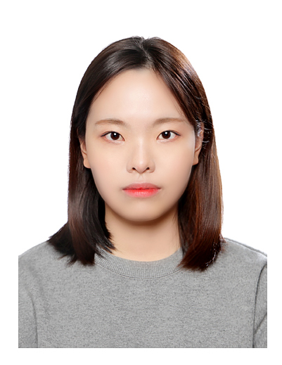

자기소개

저는 한신대학교 컴퓨터공학부를 졸업한 박수빈입니다. 아직 관심 분야를 찾지 못했지만 찾으려 노력하는 중이고, 하고 있는 공부에 집중하고 있는 중입니다. 관심 분야를 찾기 위해 모든 과목을 열심히 공부 중이고, 하고 싶은 분야가 생겼을 때 조금 더 자유롭게 선택할 수 있게 좋은 성적을 유지하려고 노력 중입니다.
취미는 영화와 드라마 감상하는 것이고 영어 타이핑 연습하는 것을 즐겨합니다. 영화는 히어로 영화를 좋아합니다. 특히 마블 영화를 좋아합니다. 가장 좋아하는 캐릭터는 아이언맨입니다. 드라마는 한국 드라마, 해외 드라마 가리지 않고 잘 봅니다. 일본어에 관심이 있어 일본어능력시험 자격증도 취득하였습니다. 그리고 일본어 전공 강의를 듣고 있으며 부전공을 생각하고 있습니다.
인생 목표는 한국어, 일본어, 영어에 능통해지는 것이고 세계 여행을 다니는 것이고, 돈 많은 무직자가 되는 것입니다.
항상 어떤 환경에서도 최선을 다하고 즐기는 마음으로 열심히 일하고자 합니다.